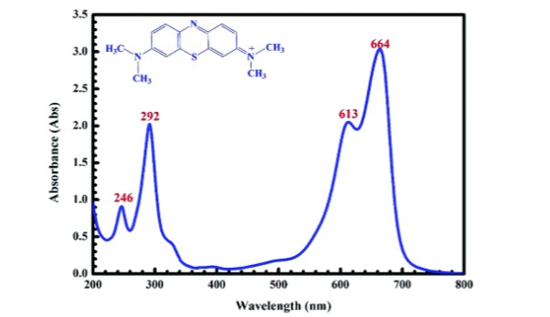
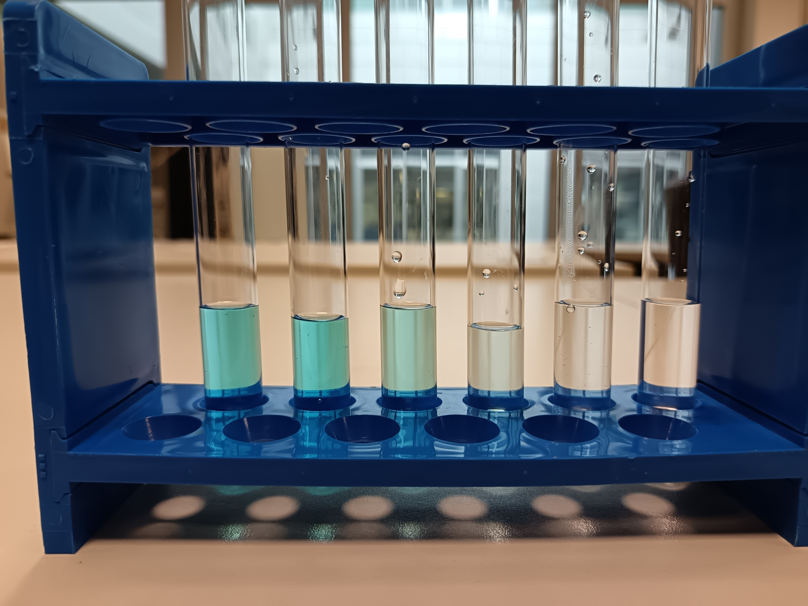
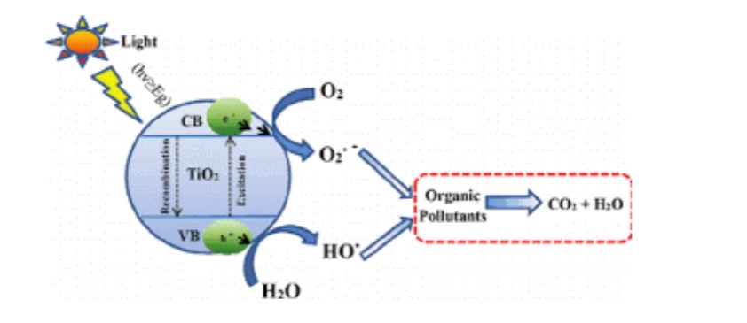
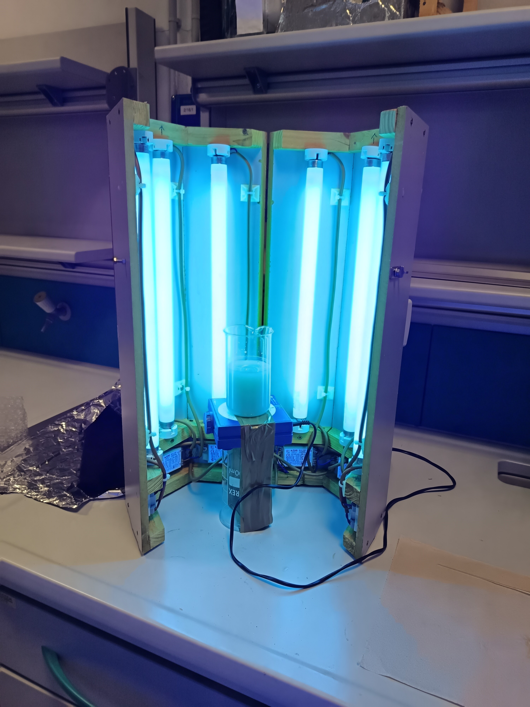
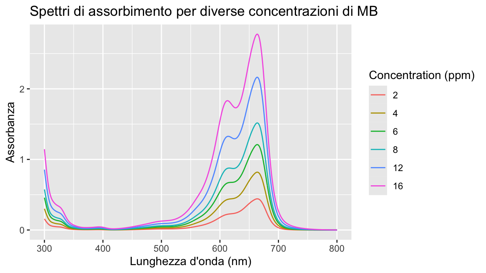
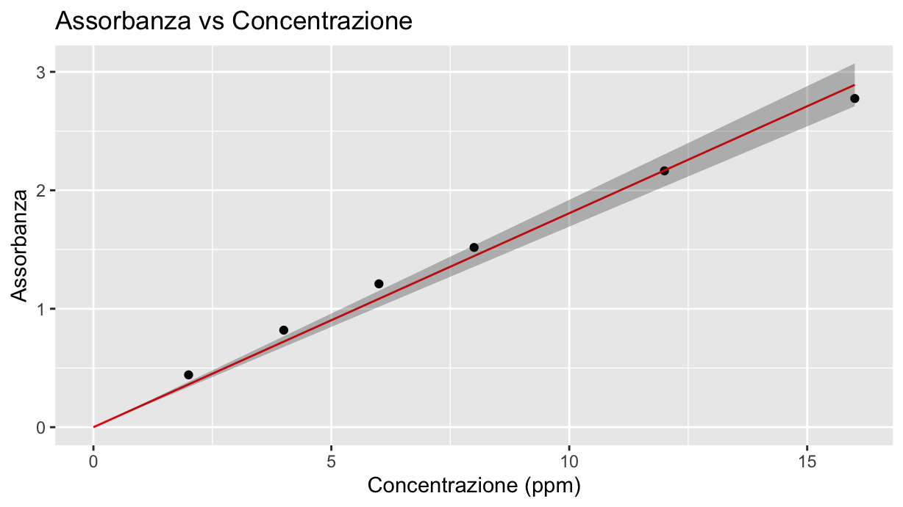
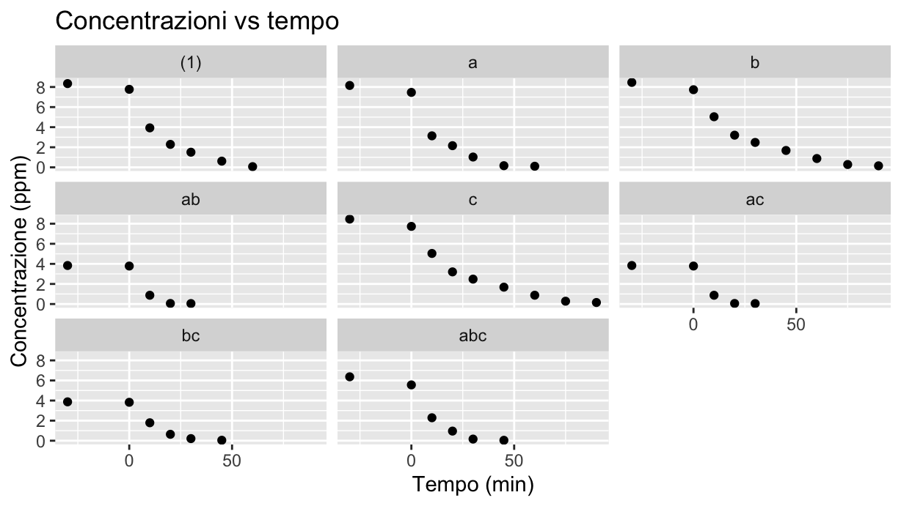
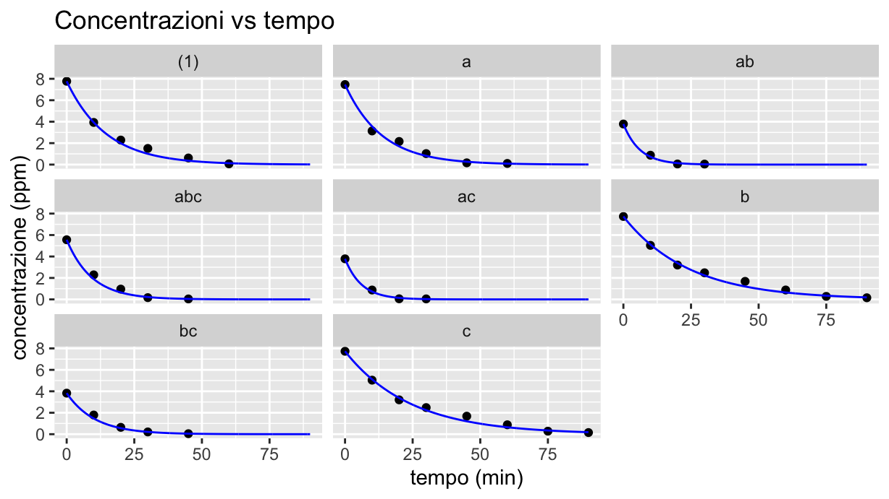

Degradazione fotocatalitica di soluzioni di blu di metilene
materiali
Autore/Autrice
Tommaso Stefani
Data di Pubblicazione
30 luglio 2025
Sommario
In questa attività si conducono esperimenti di degradazione fotocatalitica di soluzioni di blu di metilene
Descrizione dell’attività
Nella presente attività si conducono reazioni di fotocatalisi per determinare come varia la velocità di degradazione fotocatalitica di soluzioni acquose di blu di metilene al variare di diversi fattori presi in considerazione.
Allo scopo è necessaria una progettazione dell’esperimento (DoE) che permetta di valutare statisticamente come ogni parametro tra quelli presi in considerazione influenzi la velocità (= la resa) del processo.
I parametri che si considerano sono:
concentrazione di catalizzatore
concentrazione di blu di metilene
intensità luminosa (numero di lampade UV accese durante la reazione)
temperatura della soluzione
Cenni teorici
Blu di metilene e meccanismo di reazione
Il blu di metilene (MB) è un colorante organico ampiamente utilizzato come molecola sonda per testare l’efficienza di processi di decontaminazione di effluenti acquosi, in quanto presenta:
Colore intenso (blu brillante),
Facilità di solubilizzazione in acqua,
Spettro di assorbimento ben definito nell’UV-visibile,
Stabilità e tracciabilità tramite spettrofotometria UV-Vis.

Spettro e molecola del blu di metilene
Lo spettro di assorbimento UV-Vis del MB mostra un massimo di assorbanza a 664 nm. Durante una reazione di degradazione, questa assorbanza diminuisce progressivamente, segnalando la riduzione della concentrazione della molecola in soluzione.

Provette con soluzione di MB prelevate a diversi tempi durante la reazione
Il processo di fotocatalisi eterogenea sfrutta semiconduttori come il biossido di titanio (TiO₂), che viene attivato da radiazione UV. Il meccanismo alla base della reazione considerata è il seguente:
Attivazione del fotocatalizzatore: \(\text{TiO}_2 + h\nu \rightarrow e^- + h^+\)
Reazioni alle interfacce:
Riduzione dell’ossigeno disciolto da parte degli elettroni \(e^-\): \(O_2 + e^- \rightarrow O_2^{\cdot-}\)
Ossidazione dell’acqua da parte delle lacune: \(h^+\): \(H_2O + h^+ \rightarrow \cdot OH + H^+\)
Degradazione del blu di metilene: \(\text{MB} + \cdot OH \rightarrow \text{prodotti ossidati}\)
Queste specie reattive degradano il blu di metilene in composti meno complessi, fino alla completa mineralizzazione (\(CO_2\), \(H_2O\), sali inorganici).
In figura la sintesi di quanto detto:

Meccanismo di reazione
Cinetica della reazione
La degradazione fotocatalitica del MB segue una cinetica di primo ordine, governata dalla seguente equazione differenziale:
\[
\frac{dC}{dt} = -kC
\]
dove:
\(C\) è la concentrazione del MB al tempo \(t\),
\(C_0\) è la concentrazione iniziale (\(t = 0\)),
\(k\) è la costante cinetica (in \(min^{-1}\)).
La soluzione dell’equazione risulta:
\[
\ln\left(\frac{C}{C_0}\right) = -kt
\]
oppure:
\[
C(t) = C_0 \cdot e^{-kt}
\]
Misura della concentrazione tramite UV-Vis
Per determinare l’andamento della concentrazione del blu di metilene nel tempo, si misura l’assorbanza della soluzione a 664 nm. In base alla legge di Lambert-Beer, la relazione tra assorbanza e concentrazione è:
\[
A = \varepsilon \cdot l \cdot C
\]
dove \(A\) è l’assorbanza misurata, \(\varepsilon\) è il coefficiente di estinzione molare del blu di metilene, \(l\) è il cammino ottico della cuvetta (in genere 1 cm) e \(C\) è la concentrazione.
Poiché \(\varepsilon\) e \(l\) sono costanti nelle condizioni sperimentali, la concentrazione si può ottenere da:
\[
C = \frac{A}{\varepsilon \cdot l}
\]
Spettrofotometro
Design of Experiments (DoE)
Il Design of Experiments (DoE) è un’insieme di metodologie statistiche utilizzate per pianificare, eseguire e analizzare esperimenti in modo efficace, con l’obiettivo di identificare l’influenza di più fattori su una risposta misurabile,con il presupposto di ridurre il più possibile il numero di prove necessarie. Nella progettazione di un esperimento, una fase fondamentale consiste nell’elaborazione del piano fattoriale, che definisce in modo preciso quali prove devono essere eseguite per studiare l’effetto dei fattori coinvolti.
Quando i fattori sono molti (o quando le risorse a disposizione limitano il numero di prove possibili) il DoE mette a disposizione diversi metodi, tra i quali:
I piani fattoriali frazionati, che consentono di indagare solo una frazione delle combinazioni possibili, risparmiando tempo e risorse.
Il metodo di Daniel, che aiuta a identificare rapidamente i fattori e le interazioni significative rappresentando gli effetti sperimentali su un grafico quantile-quantile (Q-Q plot). In questo grafico, gli effetti più piccoli (ossia quelli non significativi) tendono ad allinearsi lungo la diagonale, mentre gli effetti maggiori si discostano da essa. Questo permette di distinguere facilmente quali fattori o interazioni hanno un impatto reale sul sistema. Un vantaggio importante di questo approccio è che, eliminando dall’analisi i fattori o le interazioni non significative (ossia quelli che si allineano sulla diagonale del diagramma di Daniel), si riduce il numero di parametri da regredire. Di fatto, questa semplificazione permette di effettuare un’analisi statistica come l’ANOVA anche senza ripetizioni esplicite degli esperimenti.
Parte sperimentale
Apparecchiatura
Blu di metilene (\(MB\))
Acqua distillata
fotocatalizzatore (\(TiO_2\))
Cilindro graduato da 250 ml
Agitatore magnetico
Becher da 250 ml
Matraccio
Due siringhe da 10 ml
Filtro per siringa
Lampade UV
Cuvette portacampioni
Carta assorbente
Procedimento
Dopo aver preparato 1 litro di soluzione 16 mg/l di MB in un matraccio per ogni prova prevista dal piano fattoriale:
Versare nel cilindro graduato la corretta quantità di soluzione e diluire opportunamente per ottenere la soluzione di concentrazione prevista dalla prova da eseguire.
Prelevare un’idonea quantità di soluzione di MB e inserirla in una provetta, identificandola opportunamente.
Aggiungere alla soluzione il catalizzatore \(TiO_2\) (in quantità prevista dalla prova), versare la soluzione in un becher e lasciare agitare al buio per 30 minuti
Prelevare un’idonea quantità di soluzione di MB, filtrarla mediante siringa con filtro e inserirla in una provetta, identificandola opportunamente.
Indossare gli occhiali di protezione, accendere le lampade UV e lasciar irraggiare la soluzione per un tempo di 10, 20, 30 e 40 minuti.
Al termine di ciascun intervallo di tempo, prelevare una provetta identificandola opportunamente.
Misurare il valore di assorbanza per ogni provetta
In quanto sarà necessario regredire un modello che permetta di correlare l’assorbanza ai valori di concentrazione di MB della soluzione è necessario eseguire anche la misura di assorbanza di diverse soluzioni di MB corrispondenti a diverse concetrazioni.

Reattore
Informazioni di sicurezza:
Blu di metilene: Frasi H: 302 (nocivo se ingerito)
Utilizzare occhiali protettivi (radiazione UV)
Misura tramite Spettrofotometro UV-Vis
Lo Spettrofotometro è un dispositivo che misura l’intensità della luce prima e dopo aver attraversato un campione restituendo il valore dell’assorbanza dello stesso.
\[
A = \log_{10} \left( \frac{I_0}{I} \right)
\]
La procedura di misura è la seguente:
preparare la soluzione da analizzare e inserirla nella cuvetta portacampioni
inserire la cuvetta nello spettrofotometro UV-Vis
effettuare la misura di baseline (zero strumentale) con una cuvetta in cui vi è solvente puro (acqua distillata)
impostare la scansione dello spettro su un intervallo di lunghezze d’onda opportuno (es. 400–800 nm)
avviare la scansione per acquisire lo spettro di assorbanza completo
lo spettro è memorizzabile come file di testo in cui per ogni lunghezza d’onda è riportato il valore dell’assorbanza
Elaborazione dei dati
Piano fattoriale
Si vuole indagare la relazione sperimentale che lega la \(k\) dell’equazione cinetica con i seguenti 4 parametri:
concentrazione di \(TiO_2\) in g/l -> fattore A (quantitativo)
concentrazione di \(MB\) in g/l -> fattore B(quantitativo)
temperatura della soluzione in °C -> fattore C (quantitativo)
intensità luminosa (numero di lampade UV utilizzate) -> fattore D (qualitativo)
Si sviluppa il piano fattoriale che specifica quali siano le prove (e quindi la combinazione di fattori) da effettuare. In quanto le reazioni richiedono un tempo di svolgimento non indifferente si analizzano solo livello alto e livello basso di ogni fattore (al più si potrà dunque ottenere una relazione di tipo lineare). Inoltre non si effettuano repliche, aspettandosi che almeno uno dei fattori o delle interazioni risulti essere non significativo. Se si realizza tale situazione sii avrebbero di fatto delle repliche implicite nelle misure (cosa molto probabile dato il numero di fattori).
dm<-fp_design_matrix(4)%>%fp_add_names(A="Catalizzatore",B="MB",C="Temperatura",D="Intensità_luminosa")%>%fp_add_scale(A=c(0.2,0.4),B=c(0.004,0.008),C=c(8,22),D=c(3,6))#eventualmnete se le prove sono troppe frazionare il pianokable(dm)
StdOrder
RunOrder
.treat
.rep
A
B
C
D
A_s
B_s
C_s
D_s
Y
1
11
(1)
1
-1
-1
-1
-1
0.2
0.004
8
3
NA
2
2
a
1
1
-1
-1
-1
0.4
0.004
8
3
NA
3
6
b
1
-1
1
-1
-1
0.2
0.008
8
3
NA
4
10
ab
1
1
1
-1
-1
0.4
0.008
8
3
NA
5
3
c
1
-1
-1
1
-1
0.2
0.004
22
3
NA
6
1
ac
1
1
-1
1
-1
0.4
0.004
22
3
NA
7
4
bc
1
-1
1
1
-1
0.2
0.008
22
3
NA
8
8
abc
1
1
1
1
-1
0.4
0.008
22
3
NA
9
12
d
1
-1
-1
-1
1
0.2
0.004
8
6
NA
10
14
ad
1
1
-1
-1
1
0.4
0.004
8
6
NA
11
9
bd
1
-1
1
-1
1
0.2
0.008
8
6
NA
12
16
abd
1
1
1
-1
1
0.4
0.008
8
6
NA
13
13
cd
1
-1
-1
1
1
0.2
0.004
22
6
NA
14
5
acd
1
1
-1
1
1
0.4
0.004
22
6
NA
15
15
bcd
1
-1
1
1
1
0.2
0.008
22
6
NA
16
7
abcd
1
1
1
1
1
0.4
0.008
22
6
NA
Le prove si identificano tramite la notazione di Yates. Si raccomanda di nominare i file ottenuti dallo spettrofotometro in maniera tale da poter poi implementare un codice che permetta di importare in dati in modo “automatico”.
Raccolta dati
Si creano due tabelle:
data_cali per i dati utili alla regressione del modello che lega assorbanza alla concentrazione (in ppm)
data_prove per i dati utili all’analisi oggetto della presente attività
data_cali contiene i valori degli spettri relativi a soluzioni con diverse concentrazioni di MB. Si importano tali dati:
file_cali <-list.files("data/calibrazione", full.names =TRUE)data_cali <-map_dfr(file_cali, function(file) {read.csv(file, skip =42, header =TRUE) %>%rename(Wavelength_nm = Wavelength..nm.)%>%mutate(Concentration_ppm =parse_number(sub("\\.txt$", "", basename(file))))}) %>%arrange(Concentration_ppm)%>%relocate(Concentration_ppm,.before= Wavelength_nm)kable(head(data_cali),caption="Tabella con i dati degli spettri relativi a soluzioni a diversa concentrazione di MB")
Tabella con i dati degli spettri relativi a soluzioni a diversa concentrazione di MB
Concentration_ppm
Wavelength_nm
Absorbance
2
300
0.1570
2
301
0.1446
2
302
0.1322
2
303
0.1201
2
304
0.1091
2
305
0.0989
data_prove contiene i dati degli spettri raccolti dalle provette prelevate a diversi tempi durante lo svolgimento della reazione, per tutte le prove effettuate.
Poiché sono state svolte più prove e per ciascuna prova si hanno piu file che rappresentano gli spettri delle provette prelevate a diversi tempi, si raggruppano tutti questi dati in un’unica tibble.
Questa tibble avrà quattro colonne:
tempo_min: il tempo di prelievo in minuti alla quale è stata prelevata una provetta di soluzione durante la reazione
prova: la sigla di yates che identifica la prova
Absorbance: il valore dell’assorbanza misurata per una specifica lunghezza d’onda,
Wavelength_nm: la lunghezza d’onda corrispondente alla misura.
Esistono molti modi per importare i dati come appena spiegato, uno di questi puo essere facendo uso del codice seguente.
#list.dirs() crea una lista di stinghe rappresentanti i percorsi delle cartelle o dei files contenuti subito dentro la cartella#data come argomento (se recursive=F)# keep() restituisce un vettore che contiene solo gli elementi del vettore originario in posizione TRUE rispetto ad un vettore#logico passato come argomento.#str_detect() restituisce un vettore logico ottenuto sulla base di un criterio dato come argomento , nel nostro caso#restituisce true se il basename , che è la parte finale del percorso, inizia (^) con la parola prova.cartelle_prove <-list.dirs("data/", recursive =FALSE, full.names =TRUE)%>%keep(~str_detect(basename(.), "^prova")) # cartelle_prove è quindi un vettore che contiene i percorsi come "data/prova_(1)_7725" delle cartelle che contengono#i file delle SOLE prove.#La funzione leggi_prova unisce tutti i file contenuti dentro una SINGOLA cartella di prova, estrae il tempo dal nome di #ogni file, importa i dati saltando le intestazioni, aggiunge le colonne tempo e prova, e unisce tutto in un unica tibble.#La tibble che restituisce quindi contiene tutti i dati relativi ad un'unica prova, e quindi gli spettri a diversi tempi della#stessa prova.leggi_prova <-function(cartella) { files <-list.files(cartella, pattern ="\\.txt$", full.names =TRUE) #lista di tutti i path dei file .txt contenuti nella cartella passata nome_prova <-str_extract(basename(cartella), "(?<=prova_)[^_]+") #nome della prova che stiamo caricando nella notazione di yates leggi_file <-function(file) { tempo <-str_extract(file, "_-?\\d+min") %>%str_remove_all("_|min") %>%as.numeric() #per avere il tempo numericoread.csv(file, skip =42,header = T) %>%rename(Wavelength_nm = Wavelength..nm.) %>%mutate(.treat = nome_prova,tempo_min = tempo ) %>%tibble() }map_dfr(files, leggi_file) # per ottenere un'unica tibble }# Per unire tutte le prove usiamo map_dfr che restituisce un'unico data.frame che contiene tutti i datti di tutte le provedata_prove <-map_dfr(cartelle_prove, leggi_prova) %>%mutate(.treat =factor(.treat, levels = dm %>%pull(.treat)))%>%arrange(.treat,tempo_min)%>%relocate(.treat,tempo_min,.before = Wavelength_nm)kable(head(data_prove))
.treat
tempo_min
Wavelength_nm
Absorbance
(1)
-30
300
0.5744
(1)
-30
301
0.5290
(1)
-30
302
0.4836
(1)
-30
303
0.4414
(1)
-30
304
0.4013
(1)
-30
305
0.3657
Calibrazione
Si possono graficare gli spettri delle soluzioni a diversa concentrazione di MB:
data_cali%>%ggplot(aes(x=Wavelength_nm,y=Absorbance,color =factor(Concentration_ppm)))+geom_line()+labs(title ="Spettri di assorbimento per diverse concentrazioni di MB",x ="Lunghezza d'onda (nm)",y ="Assorbanza",color ="Concentration (ppm)" )

Per trovare il coefficiente del modello che correla assorbanza con concentrazione (che deve essere lineare secondo la legge di Lambert-Beer) si individuano i valori di assorbanza che corrispondono al massimo degli spettri per le varie concentrazioni:
data_cali<-data_cali%>%group_by(Concentration_ppm)%>%summarise(Absorbance=max(Absorbance,na.rm=T))kable(data_cali, caption="Concentrazione MB vs Assorbanza")
Concentrazione MB vs Assorbanza
Concentration_ppm
Absorbance
2
0.4417
4
0.8193
6
1.2103
8
1.5174
12
2.1642
16
2.7750
Si regredisce quindi il modello lineare ponendo nulla l’intercetta:
data_cali.lm<-lm(Absorbance ~ Concentration_ppm -1, data = data_cali)summary(data_cali.lm)
Call:
lm(formula = Absorbance ~ Concentration_ppm - 1, data = data_cali)
Residuals:
1 2 3 4 5 6
0.080423 0.096746 0.126469 0.072292 -0.003462 -0.115215
Coefficients:
Estimate Std. Error t value Pr(>|t|)
Concentration_ppm 0.1806 0.0044 41.05 1.62e-07 ***
---
Signif. codes: 0 '***' 0.001 '**' 0.01 '*' 0.05 '.' 0.1 ' ' 1
Residual standard error: 0.1003 on 5 degrees of freedom
Multiple R-squared: 0.997, Adjusted R-squared: 0.9965
F-statistic: 1685 on 1 and 5 DF, p-value: 1.617e-07
#sequenza di valori x (includendo lo 0)pl_data <-tibble(Concentration_ppm =seq(0, max(data_cali$Concentration_ppm), length.out =100))# predizioni con intervallo di confidenzapred <-predict(data_cali.lm, pl_data, interval ="confidence")# Unisco le tabellepl_data <-bind_cols(pl_data, as_tibble(pred))ggplot() +geom_point(data = data_cali, aes(x = Concentration_ppm, y = Absorbance)) +geom_line(data = pl_data, aes(x = Concentration_ppm, y = fit), color ="red") +geom_ribbon(data = pl_data, aes(x = Concentration_ppm, ymin = lwr, ymax = upr), alpha =0.3) +labs(title ="Assorbanza vs Concentrazione",x ="Concentrazione (ppm)",y ="Assorbanza" ) +expand_limits(x =0, y =0)

coeff<-data_cali.lm$coefficients
Il coefficiente che lega la concentrazione in ppm all’assorbanza è quindi coeff= 0.1806385. Per trovare il valore incognito di concentrazione di una soluzione di` MB basterà quindi moltiplicare il valore di picco del suo spettro per l’inverso del coefficiente appena trovato.
Spettri delle varie prove
Gli spettri delle soluzioni di ogni provetta (ogni provetta corrisponde ad un determinato tempo di prelievo per un determinato trattamento) si riportano di seguito:
Si nota che per alcune prove non è stato necessario procedere fino a 90 minuti in quanto la reazione risultava gia conclusa (asintoticamente).
Curva cinetica della reazione e calcolo della costante k
Si vuole innanzitutto verificare che le reazioni condotte siano effettivamente del primo ordine (come suggerito da letteratura)
#si aggiunge al dataframe delle prove la concentrazione corrispondente al tempo 0 per ogni prova, servirà in seguitodata_C0 <- data_prove %>%filter(tempo_min ==0) %>%group_by(.treat) %>%summarise(Abs =max(Absorbance, na.rm =TRUE)) %>%mutate(C0=(1/coeff)*Abs)%>%select(!Abs)%>%ungroup()data_prove <- data_prove %>%left_join(data_C0, by =".treat")## si crea un data frame il quale contiene il valore della concentrazione per ogni tempo e per ogni prova (ricavato dal massimo dello spettro per un certo tempodata_prove_max <- data_prove %>%group_by(.treat, tempo_min) %>%slice_max(order_by = Absorbance, n =1, with_ties =FALSE) %>%ungroup()%>%mutate(Concentration_ppm = (1/coeff)*Absorbance) data_prove_max
## si plottano i punti sperimentali cosi ottenuti(data_prove_max_plot<-data_prove_max%>%ggplot(aes(tempo_min,y=Concentration_ppm))+geom_point()+facet_wrap(~.treat)+labs(title ="Concentrazioni vs tempo",x ="Tempo (min)",y ="Concentrazione (ppm)" ))

Sembrerebbe che dall’istante 0 (che corrisponde all’accensione delle lampade UV) l’andamento della concentrazione sia effettivamente a decadimento esponenziale, e quindi del primo ordine.
Si ricorda che la forma linearizzata della soluzione dell’equazione differenziale che governa la cinetica della reazione è la seguente:
\[
\ln\left(\frac{C}{C_0}\right) = -kt
\]
Ciò suggerisce di eseguire delle regressioni per i vari trattamenti utilizzando un modello lineare \(y~x\) in cui \(y=\ln(\frac{C}{C_0})\) in modo da determinare il valore della costante \(k\) per ogni trattamneto, unico parametro che descrive la velocità della reazione per il modello adottato. Eseguiamo quindi per ogni prova una regressione con un modello a decadimento esponenziale dall’istante 0 per determinare il valore della tau, unico parametro che descrive la velocità della reazione per il modello adottato.
models <- data_prove_max%>%#dataframe separati per ogni trattamentofilter(tempo_min>=0)%>%group_by(.treat) %>%group_split()nomi_prove <- data_prove_max%>%# nomi delle prove filter(tempo_min >=0) %>%distinct(.treat) %>%pull(.treat)# Crea la lista dei modellimodelli <-map(models, ~lm(-log(Concentration_ppm/C0) ~ tempo_min -1,data=.x))# Assegna i nomi alla listanames(modelli) <- nomi_provedf_k<-tibble(.treat =names(modelli),k =map_dbl(modelli, ~coef(.x)[["tempo_min"]]))kable(df_k,caption="Costante cinetica per ogni trattamento")
Costante cinetica per ogni trattamento
.treat
k
(1)
0.0681490
a
0.0739003
b
0.0413231
ab
0.1645459
c
0.0413231
ac
0.1645459
bc
0.0958463
abc
0.1075500
Si graficano le curve cinetiche che si sono regredite per ogni reazione condotta:
f <-function(t, k, C0) { y <- C0 *exp(-k*t)return(y)}#Si aggiugono le k a data_prove_maxdata_prove_max <- data_prove_max %>%left_join(df_k, by =".treat")#Creiamo una sequenza continua di tempi da 0 al max tempo >= 0 (preso da data)tempo_range <-range(data_prove_max$tempo_min[data_prove_max$tempo_min >=0])tempi_seq <-seq(tempo_range[1], tempo_range[2], by =0.1)#Generiamo un df con tempi continui per ogni prova e i parametri per calcolare la curvadf_curve <- data_prove_max %>%group_by(.treat) %>%expand(tempo_min = tempi_seq) %>%# crea tempi continui per ogni provaleft_join(., data_prove_max %>%distinct(.treat,k, C0), by =".treat") %>%mutate(y_fit =f(tempo_min, k, C0)) %>%ungroup()#Plot con punti sperimentali + curva data_prove_max %>%filter(tempo_min >=0) %>%ggplot(aes(tempo_min, Concentration_ppm)) +geom_point() +facet_wrap(~.treat) +geom_line(data = df_curve, aes(tempo_min, y_fit), color ="blue") +labs(title ="Concentrazioni vs tempo",x ="tempo (min)",y ="concentrazione (ppm)" )

Modello che lega k ai fattori
Ora inseriamo finalmente i valori delle k nel piano fattoriale iniziale:
dm <- dm %>%select(-Y) %>%left_join(df_k %>%select(.treat, Y = k), by =".treat")%>%filter(!is.na(Y))dm
Factorial Plan Design Matrix
Defining Relationship: ~ A * B * C * D
Factors: A B C D
Levels: -1 1
Fraction: NA
Type: plain
Scales suffix: _s
Scaled factors:
A_s: [0.2, 0.4]
B_s: [0.004, 0.008]
C_s: [8, 22]
D_s: [3, 6]
Factor names:
A: Catalizzatore
B: MB
C: Temperatura
D: Intensità_luminosa
# A tibble: 8 × 13
StdOrder RunOrder .treat .rep A B C D A_s B_s C_s D_s
<int> <int> <chr> <int> <dbl> <dbl> <dbl> <dbl> <dbl> <dbl> <dbl> <dbl>
1 1 11 (1) 1 -1 -1 -1 -1 0.2 0.004 8 3
2 2 2 a 1 1 -1 -1 -1 0.4 0.004 8 3
3 3 6 b 1 -1 1 -1 -1 0.2 0.008 8 3
4 4 10 ab 1 1 1 -1 -1 0.4 0.008 8 3
5 5 3 c 1 -1 -1 1 -1 0.2 0.004 22 3
6 6 1 ac 1 1 -1 1 -1 0.4 0.004 22 3
7 7 4 bc 1 -1 1 1 -1 0.2 0.008 22 3
8 8 8 abc 1 1 1 1 -1 0.4 0.008 22 3
# ℹ 1 more variable: Y <dbl>
A questo punto possiamo, tramite il metodo di Daniel verificare se siano presenti effetti o interazioni non significative.
dm.lm<-lm(Y~A*B*C, data=dm)anova(dm.lm)
Analysis of Variance Table
Response: Y
Df Sum Sq Mean Sq F value Pr(>F)
A 1 0.0087054 0.0087054 NaN NaN
B 1 0.0004704 0.0004704 NaN NaN
C 1 0.0004704 0.0004704 NaN NaN
A:B 1 0.0000044 0.0000044 NaN NaN
A:C 1 0.0000044 0.0000044 NaN NaN
B:C 1 0.0005493 0.0005493 NaN NaN
A:B:C 1 0.0065546 0.0065546 NaN NaN
Residuals 0 0.0000000 NaN
Quindi, risulta che gli unici fattori che ha un impatto significativo sulla velocità di reazione (e quindi sulla costante\(k\)) sono **(devo fare le prove in laboratorio effettive)